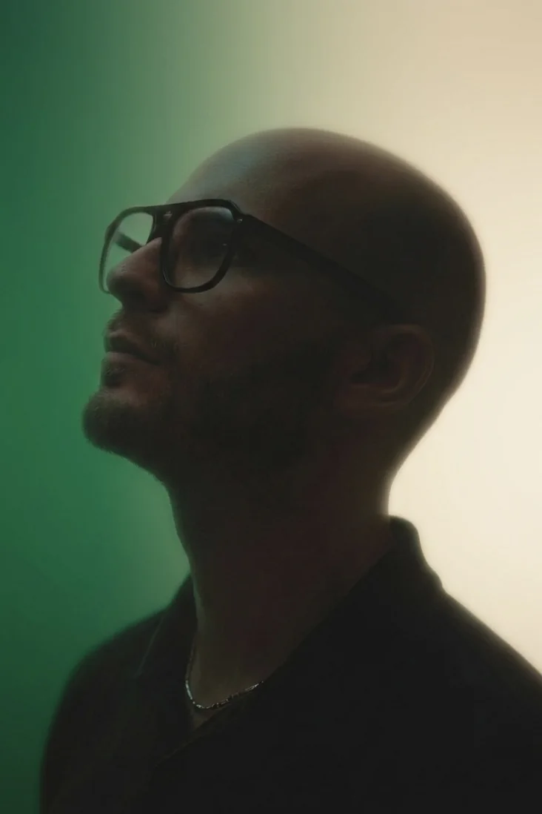

SU DI ME
Michele
Galati
Mi piace capire come e perché comunicano le cose.
Mi occupo di UI/UX design, con interesse per il branding, la comunicazione visiva e la progettazione di esperienze digitali chiare e riconoscibili.
Parliamo del tuo progetto →IL MIO PERCORSO
Curriculum vitae
Profilo
UI/UX design, branding e comunicazione visiva. Un interesse per le relazioni tra forma, contenuto ed esperienza.
Formazione
UI/UX Design e Agenti AI
start2impact
Grafico pubblicitario
ADAP — Accademia delle Arti e Professioni
Competenze
- UI e UX Design
- Branding e Graphic Design
- HTML, CSS e Sass
- Bootstrap e Responsive Design
Strumenti
- Figma
- Adobe Creative Cloud
- VS Code
- GitHub
Esperienze
Designer grafico
Francioso Comunicazione · A tempo pieno
Agosto 2026 — Presente
Vibo Valentia, Calabria, Italia · In sede
Sviluppo di materiali pubblicitari cartacei, grande formato e campagne Out-of-Home (OOH), cartellonistica e affissioni.
Designer grafico
Freelance
Gennaio 2024 — Luglio 2026
Progettazione di elementi di comunicazione visiva per stampa e digitale.
Servizi
Web Design · Ricerca UX · Animazione · Visual Design · Interaction Design
Lingue
Italiano: madrelingua o bilingue.
Inglese: conoscenza lavorativa limitata.
Contatti
michelegalati.studio@gmail.comInstagram · michele.workspace
LinkedIn →